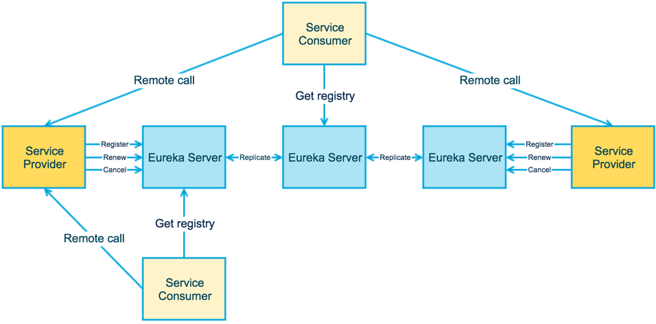
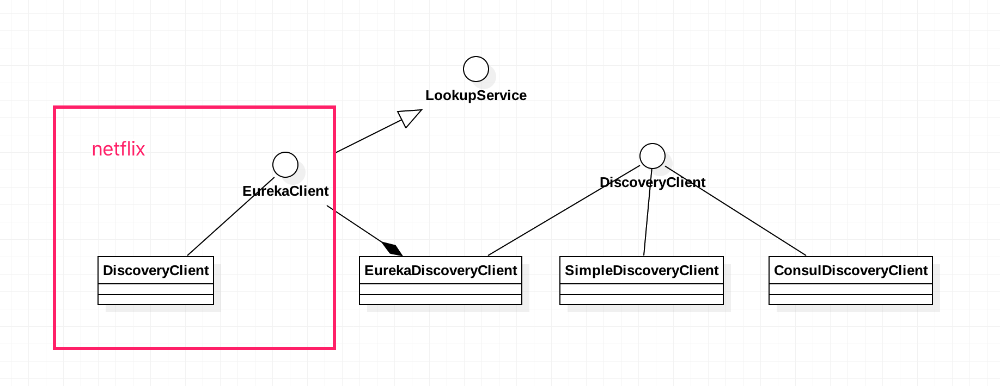

<!doctype html>


  


<html class="theme-next muse use-motion" lang="">
<head>
  <meta charset="UTF-8"/>
<meta http-equiv="X-UA-Compatible" content="IE=edge" />
<meta name="viewport" content="width=device-width, initial-scale=1, maximum-scale=1"/>


<meta http-equiv="Cache-Control" content="no-transform" />
<meta http-equiv="Cache-Control" content="no-siteapp" />


  
  
  <link href="/lib/fancybox/source/jquery.fancybox.css?v=2.1.5" rel="stylesheet" type="text/css" />


  
  
  
  

  
    
    
  

  

  

  

  

  
    
    
    <link href="//fonts.googleapis.com/css?family=Lato:300,300italic,400,400italic,700,700italic&subset=latin,latin-ext" rel="stylesheet" type="text/css">
  


<link href="/lib/font-awesome/css/font-awesome.min.css?v=4.6.2" rel="stylesheet" type="text/css" />

<link href="/css/main.css?v=5.1.0" rel="stylesheet" type="text/css" />


  <meta name="keywords" content="SpringCloud源码解析," />


  <link rel="shortcut icon" type="image/x-icon" href="/favicon.ico?v=5.1.0" />


<meta name="description" content="Eureka是什么？
Eureka is a REST (Representational State Transfer) based service that is primarily used in the AWS cloud for locating services for the purpose of load balancing and failover of middle-tier">
<meta property="og:type" content="article">
<meta property="og:title" content="springcloud之eureka源码分析">
<meta property="og:url" content="http://xu6148152.github.io/2017/12/17/springcloud之eureka源码分析/index.html">
<meta property="og:site_name" content="Blog">
<meta property="og:description" content="Eureka是什么？
Eureka is a REST (Representational State Transfer) based service that is primarily used in the AWS cloud for locating services for the purpose of load balancing and failover of middle-tier">
<meta property="og:image" content="http://xu6148152.github.io/./eureka_architecture.png">
<meta property="og:image" content="http://xu6148152.github.io/./architecture-detail.png">
<meta property="og:image" content="http://xu6148152.github.io/./eureka_uml_01.png">
<meta property="og:updated_time" content="2017-12-17T09:06:56.122Z">
<meta name="twitter:card" content="summary">
<meta name="twitter:title" content="springcloud之eureka源码分析">
<meta name="twitter:description" content="Eureka是什么？
Eureka is a REST (Representational State Transfer) based service that is primarily used in the AWS cloud for locating services for the purpose of load balancing and failover of middle-tier">
<meta name="twitter:image" content="http://xu6148152.github.io/./eureka_architecture.png">


<script type="text/javascript" id="hexo.configurations">
  var NexT = window.NexT || {};
  var CONFIG = {
    root: '/',
    scheme: 'Muse',
    sidebar: {"position":"left","display":"post"},
    fancybox: true,
    motion: true,
    duoshuo: {
      userId: '0',
      author: 'Author'
    },
    algolia: {
      applicationID: '',
      apiKey: '',
      indexName: '',
      hits: {"per_page":10},
      labels: {"input_placeholder":"Search for Posts","hits_empty":"We didn't find any results for the search: ${query}","hits_stats":"${hits} results found in ${time} ms"}
    }
  };
</script>


  <link rel="canonical" href="http://xu6148152.github.io/2017/12/17/springcloud之eureka源码分析/"/>


  <title> springcloud之eureka源码分析 | Blog </title>
</head>

<body itemscope itemtype="http://schema.org/WebPage" lang="">

  


  
  
    
  

  <div class="container one-collumn sidebar-position-left page-post-detail ">
    <div class="headband"></div>

    <header id="header" class="header" itemscope itemtype="http://schema.org/WPHeader">
      <div class="header-inner"><div class="site-meta ">
  

  <div class="custom-logo-site-title">
    <a href="/"  class="brand" rel="start">
      <span class="logo-line-before"><i></i></span>
      <span class="site-title">Blog</span>
      <span class="logo-line-after"><i></i></span>
    </a>
  </div>
    
      <p class="site-subtitle"></p>
    
</div>

<div class="site-nav-toggle">
  <button>
    <span class="btn-bar"></span>
    <span class="btn-bar"></span>
    <span class="btn-bar"></span>
  </button>
</div>

<nav class="site-nav">
  

  
    <ul id="menu" class="menu">
      
        
        <li class="menu-item menu-item-home">
          <a href="/" rel="section">
            
              <i class="menu-item-icon fa fa-fw fa-home"></i> <br />
            
            Startseite
          </a>
        </li>
      
        
        <li class="menu-item menu-item-archives">
          <a href="/archives" rel="section">
            
              <i class="menu-item-icon fa fa-fw fa-archive"></i> <br />
            
            Archiv
          </a>
        </li>
      
        
        <li class="menu-item menu-item-tags">
          <a href="/tags" rel="section">
            
              <i class="menu-item-icon fa fa-fw fa-tags"></i> <br />
            
            Tags
          </a>
        </li>
      

      
    </ul>
  

  
</nav>


 </div>
    </header>

    <main id="main" class="main">
      <div class="main-inner">
        <div class="content-wrap">
          <div id="content" class="content">
            

  <div id="posts" class="posts-expand">
    

  

  
  
  

  <article class="post post-type-normal " itemscope itemtype="http://schema.org/Article">
  <link itemprop="mainEntityOfPage" href="http://xu6148152.github.io/2017/12/17/springcloud之eureka源码分析/">

  <span style="display:none" itemprop="author" itemscope itemtype="http://schema.org/Person">
    <meta itemprop="name" content="Binea">
    <meta itemprop="description" content="">
    <meta itemprop="image" content="/upload_file/tmp.jpg">
  </span>

  <span style="display:none" itemprop="publisher" itemscope itemtype="http://schema.org/Organization">
    <meta itemprop="name" content="Blog">
    <span style="display:none" itemprop="logo" itemscope itemtype="http://schema.org/ImageObject">
      
    </span>
  </span>

    
      <header class="post-header">

        
        
          <h1 class="post-title" itemprop="name headline">
            
            
              
                springcloud之eureka源码分析
              
            
          </h1>
        

        <div class="post-meta">
          <span class="post-time">
            
              <span class="post-meta-item-icon">
                <i class="fa fa-calendar-o"></i>
              </span>
              
                <span class="post-meta-item-text">Veröffentlicht am</span>
              
              <time title="Post created" itemprop="dateCreated datePublished" datetime="2017-12-17T17:06:56+08:00">
                2017-12-17
              </time>
            

            

            
          </span>

          

          
            
          

          

          
          

          

          

        </div>
      </header>
    


    <div class="post-body" itemprop="articleBody">

      
      

      
        <h3 id="Eureka是什么？"><a href="#Eureka是什么？" class="headerlink" title="Eureka是什么？"></a>Eureka是什么？</h3><blockquote>
<p>Eureka is a REST (Representational State Transfer) based service that is primarily used in the AWS cloud for locating services for the purpose of load balancing and failover of middle-tier servers. We call this service, the Eureka Server. Eureka also comes with a Java-based client component,the Eureka Client, which makes interactions with the service much easier. The client also has a built-in load balancer that does basic round-robin load balancing. At Netflix, a much more sophisticated load balancer wraps Eureka to provide weighted load balancing based on several factors like traffic, resource usage, error conditions etc to provide superior resiliency.</p>
</blockquote>
<p>Eureka是服务注册和发现的开源框架</p>
<h3 id="Eureka的优势"><a href="#Eureka的优势" class="headerlink" title="Eureka的优势"></a>Eureka的优势</h3><ul>
<li>提供了完整的服务注册和服务查找功能</li>
<li>SpringBoot的紧密结合</li>
</ul>
<h3 id="Eureka架构"><a href="#Eureka架构" class="headerlink" title="Eureka架构"></a>Eureka架构</h3><p></p>
<p>eureka的基本架构由三个角色组成:</p>
<ol>
<li><p>Eureka Server</p>
<ul>
<li>提供服务注册和发现</li>
</ul>
</li>
<li><p>Service Provider</p>
<ul>
<li>服务提供方</li>
<li>将自身服务注册到Eureka,从而使服务消费方能够找到</li>
</ul>
</li>
<li><p>Service Consumer</p>
<ul>
<li>服务消费方</li>
<li>从Eureka获取注册服务列表, 从而能够消费服务</li>
</ul>
</li>
</ol>
<p></p>
<ul>
<li>ServiceProvider会向Eureka Server做Register(服务注册)、Renewal(服务续约)、Cancellation(服务下线)等操作</li>
<li>Eureka Server之间会做注册服务的同步，从而保证状态的同一</li>
<li>Service Consumer会向Eureka Server获取服务列表，并消费服务</li>
</ul>
<h4 id="服务注册"><a href="#服务注册" class="headerlink" title="服务注册"></a>服务注册</h4><p>我们Application使用@EnableDiscoveryClient来进行注册，并且在application.properties中指定服务注册中心的位置</p>
<p><figure class="highlight java"><table><tr><td class="gutter"><pre><div class="line">1</div><div class="line">2</div><div class="line">3</div><div class="line">4</div><div class="line">5</div><div class="line">6</div><div class="line">7</div><div class="line">8</div><div class="line">9</div><div class="line">10</div><div class="line">11</div><div class="line">12</div></pre></td><td class="code"><pre><div class="line"><span class="meta">@Target</span>(ElementType.TYPE)</div><div class="line"><span class="meta">@Retention</span>(RetentionPolicy.RUNTIME)</div><div class="line"><span class="meta">@Documented</span></div><div class="line"><span class="meta">@Inherited</span></div><div class="line"><span class="meta">@Import</span>(EnableDiscoveryClientImportSelector.class)</div><div class="line"><span class="keyword">public</span> <span class="meta">@interface</span> EnableDiscoveryClient &#123;</div><div class="line"></div><div class="line">	<span class="comment">/**</span></div><div class="line">	 * If true, the ServiceRegistry will automatically register the local server.</div><div class="line">	 */</div><div class="line">	<span class="function"><span class="keyword">boolean</span> <span class="title">autoRegister</span><span class="params">()</span> <span class="keyword">default</span> <span class="keyword">true</span></span>;</div><div class="line">&#125;</div></pre></td></tr></table></figure>
</p>
<p>该注解用来开启DiscoveryClient实例</p>
<p></p>
<p>从上图中可以看出服务发现的结构图，左侧是netflix的框架实现部分。</p>
<h5 id="服务列表"><a href="#服务列表" class="headerlink" title="服务列表"></a>服务列表</h5><p>我们先找到eureka server url列表配置</p>
<p><figure class="highlight java"><table><tr><td class="gutter"><pre><div class="line">1</div><div class="line">2</div><div class="line">3</div><div class="line">4</div><div class="line">5</div><div class="line">6</div><div class="line">7</div><div class="line">8</div><div class="line">9</div><div class="line">10</div><div class="line">11</div><div class="line">12</div><div class="line">13</div><div class="line">14</div><div class="line">15</div><div class="line">16</div><div class="line">17</div><div class="line">18</div><div class="line">19</div><div class="line">20</div><div class="line">21</div><div class="line">22</div><div class="line">23</div><div class="line">24</div><div class="line">25</div><div class="line">26</div><div class="line">27</div><div class="line">28</div><div class="line">29</div><div class="line">30</div><div class="line">31</div><div class="line">32</div><div class="line">33</div><div class="line">34</div><div class="line">35</div><div class="line">36</div><div class="line">37</div><div class="line">38</div><div class="line">39</div><div class="line">40</div><div class="line">41</div><div class="line">42</div><div class="line">43</div></pre></td><td class="code"><pre><div class="line"><span class="comment">/**</span></div><div class="line">    * Get the list of all eureka service urls from properties file for the eureka client to talk to.</div><div class="line">    *</div><div class="line">    * <span class="doctag">@param</span> clientConfig the clientConfig to use</div><div class="line">    * <span class="doctag">@param</span> instanceZone The zone in which the client resides</div><div class="line">    * <span class="doctag">@param</span> preferSameZone true if we have to prefer the same zone as the client, false otherwise</div><div class="line">    * <span class="doctag">@return</span> an (ordered) map of zone -&gt; list of urls mappings, with the preferred zone first in iteration order</div><div class="line">    */</div><div class="line"><span class="keyword">public</span> <span class="keyword">static</span> Map&lt;String, List&lt;String&gt;&gt; getServiceUrlsMapFromConfig(EurekaClientConfig clientConfig, String instanceZone, <span class="keyword">boolean</span> preferSameZone) &#123;</div><div class="line">    Map&lt;String, List&lt;String&gt;&gt; orderedUrls = <span class="keyword">new</span> LinkedHashMap&lt;&gt;();</div><div class="line">    String region = getRegion(clientConfig);</div><div class="line">    String[] availZones = clientConfig.getAvailabilityZones(clientConfig.getRegion());</div><div class="line">    <span class="keyword">if</span> (availZones == <span class="keyword">null</span> || availZones.length == <span class="number">0</span>) &#123;</div><div class="line">        availZones = <span class="keyword">new</span> String[<span class="number">1</span>];</div><div class="line">        availZones[<span class="number">0</span>] = DEFAULT_ZONE;</div><div class="line">    &#125;</div><div class="line">    logger.debug(<span class="string">"The availability zone for the given region &#123;&#125; are &#123;&#125;"</span>, region, availZones);</div><div class="line">    <span class="keyword">int</span> myZoneOffset = getZoneOffset(instanceZone, preferSameZone, availZones);</div><div class="line"></div><div class="line">    String zone = availZones[myZoneOffset];</div><div class="line">    List&lt;String&gt; serviceUrls = clientConfig.getEurekaServerServiceUrls(zone);</div><div class="line">    <span class="keyword">if</span> (serviceUrls != <span class="keyword">null</span>) &#123;</div><div class="line">        orderedUrls.put(zone, serviceUrls);</div><div class="line">    &#125;</div><div class="line">    <span class="keyword">int</span> currentOffset = myZoneOffset == (availZones.length - <span class="number">1</span>) ? <span class="number">0</span> : (myZoneOffset + <span class="number">1</span>);</div><div class="line">    <span class="keyword">while</span> (currentOffset != myZoneOffset) &#123;</div><div class="line">        zone = availZones[currentOffset];</div><div class="line">        serviceUrls = clientConfig.getEurekaServerServiceUrls(zone);</div><div class="line">        <span class="keyword">if</span> (serviceUrls != <span class="keyword">null</span>) &#123;</div><div class="line">            orderedUrls.put(zone, serviceUrls);</div><div class="line">        &#125;</div><div class="line">        <span class="keyword">if</span> (currentOffset == (availZones.length - <span class="number">1</span>)) &#123;</div><div class="line">            currentOffset = <span class="number">0</span>;</div><div class="line">        &#125; <span class="keyword">else</span> &#123;</div><div class="line">            currentOffset++;</div><div class="line">        &#125;</div><div class="line">    &#125;</div><div class="line"></div><div class="line">    <span class="keyword">if</span> (orderedUrls.size() &lt; <span class="number">1</span>) &#123;</div><div class="line">        <span class="keyword">throw</span> <span class="keyword">new</span> IllegalArgumentException(<span class="string">"DiscoveryClient: invalid serviceUrl specified!"</span>);</div><div class="line">    &#125;</div><div class="line">    <span class="keyword">return</span> orderedUrls;</div><div class="line">&#125;</div></pre></td></tr></table></figure>
</p>
<p>通过region获取zone，默认为default zone。根据zone获取service列表。</p>
<p>默认使用defaultZone。也可以使用eureka.client.region来配置zone</p>
<p><figure class="highlight java"><table><tr><td class="gutter"><pre><div class="line">1</div><div class="line">2</div><div class="line">3</div><div class="line">4</div><div class="line">5</div><div class="line">6</div><div class="line">7</div><div class="line">8</div><div class="line">9</div><div class="line">10</div><div class="line">11</div><div class="line">12</div><div class="line">13</div><div class="line">14</div><div class="line">15</div></pre></td><td class="code"><pre><div class="line"><span class="meta">@Override</span></div><div class="line"><span class="function"><span class="keyword">public</span> List&lt;String&gt; <span class="title">getEurekaServerServiceUrls</span><span class="params">(String myZone)</span> </span>&#123;</div><div class="line">    String serviceUrls = configInstance.getStringProperty(</div><div class="line">            namespace + CONFIG_EUREKA_SERVER_SERVICE_URL_PREFIX + <span class="string">"."</span> + myZone, <span class="keyword">null</span>).get();</div><div class="line">    <span class="keyword">if</span> (serviceUrls == <span class="keyword">null</span> || serviceUrls.isEmpty()) &#123;</div><div class="line">        serviceUrls = configInstance.getStringProperty(</div><div class="line">                namespace + CONFIG_EUREKA_SERVER_SERVICE_URL_PREFIX + <span class="string">".default"</span>, <span class="keyword">null</span>).get();</div><div class="line"></div><div class="line">    &#125;</div><div class="line">    <span class="keyword">if</span> (serviceUrls != <span class="keyword">null</span>) &#123;</div><div class="line">        <span class="keyword">return</span> Arrays.asList(serviceUrls.split(<span class="string">","</span>));</div><div class="line">    &#125;</div><div class="line"></div><div class="line">    <span class="keyword">return</span> <span class="keyword">new</span> ArrayList&lt;String&gt;();</div><div class="line">&#125;</div></pre></td></tr></table></figure>
</p>
<p>先从指定的zone获取服务列表，如果为空，获取默认服务列表</p>
<h5 id="服务注册-1"><a href="#服务注册-1" class="headerlink" title="服务注册"></a>服务注册</h5><p>在DiscoveryClient的构造方法中可以找到各种初始化</p>
<p><figure class="highlight java"><table><tr><td class="gutter"><pre><div class="line">1</div><div class="line">2</div><div class="line">3</div><div class="line">4</div><div class="line">5</div><div class="line">6</div><div class="line">7</div><div class="line">8</div><div class="line">9</div><div class="line">10</div><div class="line">11</div><div class="line">12</div><div class="line">13</div><div class="line">14</div><div class="line">15</div><div class="line">16</div><div class="line">17</div><div class="line">18</div><div class="line">19</div><div class="line">20</div><div class="line">21</div><div class="line">22</div><div class="line">23</div><div class="line">24</div><div class="line">25</div><div class="line">26</div><div class="line">27</div><div class="line">28</div><div class="line">29</div><div class="line">30</div><div class="line">31</div><div class="line">32</div><div class="line">33</div><div class="line">34</div><div class="line">35</div><div class="line">36</div><div class="line">37</div><div class="line">38</div><div class="line">39</div><div class="line">40</div><div class="line">41</div><div class="line">42</div><div class="line">43</div><div class="line">44</div><div class="line">45</div><div class="line">46</div><div class="line">47</div><div class="line">48</div><div class="line">49</div><div class="line">50</div><div class="line">51</div><div class="line">52</div><div class="line">53</div><div class="line">54</div><div class="line">55</div><div class="line">56</div><div class="line">57</div><div class="line">58</div><div class="line">59</div><div class="line">60</div><div class="line">61</div><div class="line">62</div><div class="line">63</div><div class="line">64</div><div class="line">65</div><div class="line">66</div><div class="line">67</div><div class="line">68</div><div class="line">69</div><div class="line">70</div><div class="line">71</div></pre></td><td class="code"><pre><div class="line"><span class="function"><span class="keyword">private</span> <span class="keyword">void</span> <span class="title">initScheduledTasks</span><span class="params">()</span> </span>&#123;</div><div class="line">    <span class="keyword">if</span> (clientConfig.shouldFetchRegistry()) &#123;</div><div class="line">        <span class="comment">// registry cache refresh timer</span></div><div class="line">        <span class="keyword">int</span> registryFetchIntervalSeconds = clientConfig.getRegistryFetchIntervalSeconds();</div><div class="line">        <span class="keyword">int</span> expBackOffBound = clientConfig.getCacheRefreshExecutorExponentialBackOffBound();</div><div class="line">        scheduler.schedule(</div><div class="line">                <span class="keyword">new</span> TimedSupervisorTask(</div><div class="line">                        <span class="string">"cacheRefresh"</span>,</div><div class="line">                        scheduler,</div><div class="line">                        cacheRefreshExecutor,</div><div class="line">                        registryFetchIntervalSeconds,</div><div class="line">                        TimeUnit.SECONDS,</div><div class="line">                        expBackOffBound,</div><div class="line">                        <span class="keyword">new</span> CacheRefreshThread()</div><div class="line">                ),</div><div class="line">                registryFetchIntervalSeconds, TimeUnit.SECONDS);</div><div class="line">    &#125;</div><div class="line"></div><div class="line">    <span class="keyword">if</span> (clientConfig.shouldRegisterWithEureka()) &#123;</div><div class="line">        <span class="keyword">int</span> renewalIntervalInSecs = instanceInfo.getLeaseInfo().getRenewalIntervalInSecs();</div><div class="line">        <span class="keyword">int</span> expBackOffBound = clientConfig.getHeartbeatExecutorExponentialBackOffBound();</div><div class="line">        logger.info(<span class="string">"Starting heartbeat executor: "</span> + <span class="string">"renew interval is: &#123;&#125;"</span>, renewalIntervalInSecs);</div><div class="line"></div><div class="line">        <span class="comment">// Heartbeat timer</span></div><div class="line">        scheduler.schedule(</div><div class="line">                <span class="keyword">new</span> TimedSupervisorTask(</div><div class="line">                        <span class="string">"heartbeat"</span>,</div><div class="line">                        scheduler,</div><div class="line">                        heartbeatExecutor,</div><div class="line">                        renewalIntervalInSecs,</div><div class="line">                        TimeUnit.SECONDS,</div><div class="line">                        expBackOffBound,</div><div class="line">                        <span class="keyword">new</span> HeartbeatThread()</div><div class="line">                ),</div><div class="line">                renewalIntervalInSecs, TimeUnit.SECONDS);</div><div class="line"></div><div class="line">        <span class="comment">// InstanceInfo replicator</span></div><div class="line">        instanceInfoReplicator = <span class="keyword">new</span> InstanceInfoReplicator(</div><div class="line">                <span class="keyword">this</span>,</div><div class="line">                instanceInfo,</div><div class="line">                clientConfig.getInstanceInfoReplicationIntervalSeconds(),</div><div class="line">                <span class="number">2</span>); <span class="comment">// burstSize</span></div><div class="line"></div><div class="line">        statusChangeListener = <span class="keyword">new</span> ApplicationInfoManager.StatusChangeListener() &#123;</div><div class="line">            <span class="meta">@Override</span></div><div class="line">            <span class="function"><span class="keyword">public</span> String <span class="title">getId</span><span class="params">()</span> </span>&#123;</div><div class="line">                <span class="keyword">return</span> <span class="string">"statusChangeListener"</span>;</div><div class="line">            &#125;</div><div class="line"></div><div class="line">            <span class="meta">@Override</span></div><div class="line">            <span class="function"><span class="keyword">public</span> <span class="keyword">void</span> <span class="title">notify</span><span class="params">(StatusChangeEvent statusChangeEvent)</span> </span>&#123;</div><div class="line">                <span class="keyword">if</span> (InstanceStatus.DOWN == statusChangeEvent.getStatus() ||</div><div class="line">                        InstanceStatus.DOWN == statusChangeEvent.getPreviousStatus()) &#123;</div><div class="line">                    <span class="comment">// log at warn level if DOWN was involved</span></div><div class="line">                    logger.warn(<span class="string">"Saw local status change event &#123;&#125;"</span>, statusChangeEvent);</div><div class="line">                &#125; <span class="keyword">else</span> &#123;</div><div class="line">                    logger.info(<span class="string">"Saw local status change event &#123;&#125;"</span>, statusChangeEvent);</div><div class="line">                &#125;</div><div class="line">                instanceInfoReplicator.onDemandUpdate();</div><div class="line">            &#125;</div><div class="line">        &#125;;</div><div class="line"></div><div class="line">        <span class="keyword">if</span> (clientConfig.shouldOnDemandUpdateStatusChange()) &#123;</div><div class="line">            applicationInfoManager.registerStatusChangeListener(statusChangeListener);</div><div class="line">        &#125;</div><div class="line"></div><div class="line">        instanceInfoReplicator.start(clientConfig.getInitialInstanceInfoReplicationIntervalSeconds());</div><div class="line">    &#125; <span class="keyword">else</span> &#123;</div><div class="line">        logger.info(<span class="string">"Not registering with Eureka server per configuration"</span>);</div><div class="line">    &#125;</div><div class="line">&#125;</div></pre></td></tr></table></figure>
</p>
<p>如果需要获取注册信息,使用定时器刷新注册缓存。如果要注册服务，定时器定时发送心跳来续约。创建服务信息实例，其会执行定时任务</p>
<p><figure class="highlight java"><table><tr><td class="gutter"><pre><div class="line">1</div><div class="line">2</div><div class="line">3</div><div class="line">4</div><div class="line">5</div><div class="line">6</div><div class="line">7</div><div class="line">8</div><div class="line">9</div><div class="line">10</div><div class="line">11</div><div class="line">12</div><div class="line">13</div><div class="line">14</div><div class="line">15</div><div class="line">16</div><div class="line">17</div></pre></td><td class="code"><pre><div class="line"><span class="function">InstanceInfoReplicator</span></div><div class="line"><span class="keyword">public</span> <span class="keyword">void</span> <span class="title">run</span><span class="params">()</span> &#123;</div><div class="line">    <span class="keyword">try</span> &#123;</div><div class="line">        discoveryClient.refreshInstanceInfo();</div><div class="line"></div><div class="line">        Long dirtyTimestamp = instanceInfo.isDirtyWithTime();</div><div class="line">        <span class="keyword">if</span> (dirtyTimestamp != <span class="keyword">null</span>) &#123;</div><div class="line">            discoveryClient.register();</div><div class="line">            instanceInfo.unsetIsDirty(dirtyTimestamp);</div><div class="line">        &#125;</div><div class="line">    &#125; <span class="keyword">catch</span> (Throwable t) &#123;</div><div class="line">        logger.warn(<span class="string">"There was a problem with the instance info replicator"</span>, t);</div><div class="line">    &#125; <span class="keyword">finally</span> &#123;</div><div class="line">        Future next = scheduler.schedule(<span class="keyword">this</span>, replicationIntervalSeconds, TimeUnit.SECONDS);</div><div class="line">        scheduledPeriodicRef.set(next);</div><div class="line">    &#125;</div><div class="line">&#125;</div></pre></td></tr></table></figure>
</p>
<p>刷新实例信息。更新服务注册，如果注册时间过期，重新注册</p>
<p><figure class="highlight java"><table><tr><td class="gutter"><pre><div class="line">1</div><div class="line">2</div><div class="line">3</div><div class="line">4</div><div class="line">5</div><div class="line">6</div><div class="line">7</div><div class="line">8</div><div class="line">9</div><div class="line">10</div><div class="line">11</div><div class="line">12</div><div class="line">13</div><div class="line">14</div><div class="line">15</div><div class="line">16</div><div class="line">17</div></pre></td><td class="code"><pre><div class="line"><span class="comment">/**</span></div><div class="line">    * Register with the eureka service by making the appropriate REST call.</div><div class="line">    */</div><div class="line"><span class="function"><span class="keyword">boolean</span> <span class="title">register</span><span class="params">()</span> <span class="keyword">throws</span> Throwable </span>&#123;</div><div class="line">    logger.info(PREFIX + <span class="string">"&#123;&#125;: registering service..."</span>, appPathIdentifier);</div><div class="line">    EurekaHttpResponse&lt;Void&gt; httpResponse;</div><div class="line">    <span class="keyword">try</span> &#123;</div><div class="line">        httpResponse = eurekaTransport.registrationClient.register(instanceInfo);</div><div class="line">    &#125; <span class="keyword">catch</span> (Exception e) &#123;</div><div class="line">        logger.warn(PREFIX + <span class="string">"&#123;&#125; - registration failed &#123;&#125;"</span>, appPathIdentifier, e.getMessage(), e);</div><div class="line">        <span class="keyword">throw</span> e;</div><div class="line">    &#125;</div><div class="line">    <span class="keyword">if</span> (logger.isInfoEnabled()) &#123;</div><div class="line">        logger.info(PREFIX + <span class="string">"&#123;&#125; - registration status: &#123;&#125;"</span>, appPathIdentifier, httpResponse.getStatusCode());</div><div class="line">    &#125;</div><div class="line">    <span class="keyword">return</span> httpResponse.getStatusCode() == <span class="number">204</span>;</div><div class="line">&#125;</div></pre></td></tr></table></figure>
</p>
<p>使用EurekaHttpClient注册</p>
<p><figure class="highlight java"><table><tr><td class="gutter"><pre><div class="line">1</div><div class="line">2</div><div class="line">3</div><div class="line">4</div><div class="line">5</div><div class="line">6</div><div class="line">7</div><div class="line">8</div><div class="line">9</div><div class="line">10</div><div class="line">11</div><div class="line">12</div><div class="line">13</div><div class="line">14</div><div class="line">15</div><div class="line">16</div><div class="line">17</div><div class="line">18</div><div class="line">19</div><div class="line">20</div><div class="line">21</div><div class="line">22</div><div class="line">23</div></pre></td><td class="code"><pre><div class="line"><span class="meta">@Override</span></div><div class="line"><span class="function"><span class="keyword">public</span> EurekaHttpResponse&lt;Void&gt; <span class="title">register</span><span class="params">(InstanceInfo info)</span> </span>&#123;</div><div class="line">    String urlPath = <span class="string">"apps/"</span> + info.getAppName();</div><div class="line">    ClientResponse response = <span class="keyword">null</span>;</div><div class="line">    <span class="keyword">try</span> &#123;</div><div class="line">        Builder resourceBuilder = jerseyClient.resource(serviceUrl).path(urlPath).getRequestBuilder();</div><div class="line">        addExtraHeaders(resourceBuilder);</div><div class="line">        response = resourceBuilder</div><div class="line">                .header(<span class="string">"Accept-Encoding"</span>, <span class="string">"gzip"</span>)</div><div class="line">                .type(MediaType.APPLICATION_JSON_TYPE)</div><div class="line">                .accept(MediaType.APPLICATION_JSON)</div><div class="line">                .post(ClientResponse.class, info);</div><div class="line">        <span class="keyword">return</span> anEurekaHttpResponse(response.getStatus()).headers(headersOf(response)).build();</div><div class="line">    &#125; <span class="keyword">finally</span> &#123;</div><div class="line">        <span class="keyword">if</span> (logger.isDebugEnabled()) &#123;</div><div class="line">            logger.debug(<span class="string">"Jersey HTTP POST &#123;&#125;/&#123;&#125; with instance &#123;&#125;; statusCode=&#123;&#125;"</span>, serviceUrl, urlPath, info.getId(),</div><div class="line">                    response == <span class="keyword">null</span> ? <span class="string">"N/A"</span> : response.getStatus());</div><div class="line">        &#125;</div><div class="line">        <span class="keyword">if</span> (response != <span class="keyword">null</span>) &#123;</div><div class="line">            response.close();</div><div class="line">        &#125;</div><div class="line">    &#125;</div><div class="line">&#125;</div></pre></td></tr></table></figure>
</p>
<p>使用post请求完成服务注册</p>
<h5 id="服务获取"><a href="#服务获取" class="headerlink" title="服务获取"></a>服务获取</h5><p><figure class="highlight java"><table><tr><td class="gutter"><pre><div class="line">1</div><div class="line">2</div><div class="line">3</div><div class="line">4</div><div class="line">5</div><div class="line">6</div><div class="line">7</div><div class="line">8</div><div class="line">9</div><div class="line">10</div><div class="line">11</div><div class="line">12</div><div class="line">13</div><div class="line">14</div><div class="line">15</div><div class="line">16</div><div class="line">17</div><div class="line">18</div><div class="line">19</div><div class="line">20</div><div class="line">21</div><div class="line">22</div><div class="line">23</div><div class="line">24</div><div class="line">25</div><div class="line">26</div><div class="line">27</div><div class="line">28</div><div class="line">29</div><div class="line">30</div><div class="line">31</div><div class="line">32</div><div class="line">33</div><div class="line">34</div><div class="line">35</div><div class="line">36</div><div class="line">37</div><div class="line">38</div><div class="line">39</div><div class="line">40</div><div class="line">41</div><div class="line">42</div><div class="line">43</div></pre></td><td class="code"><pre><div class="line"><span class="class"><span class="keyword">class</span> <span class="title">CacheRefreshThread</span> <span class="keyword">implements</span> <span class="title">Runnable</span> </span>&#123;</div><div class="line">    <span class="function"><span class="keyword">public</span> <span class="keyword">void</span> <span class="title">run</span><span class="params">()</span> </span>&#123;</div><div class="line">        refreshRegistry();</div><div class="line">    &#125;</div><div class="line">&#125;</div><div class="line"></div><div class="line"><span class="function"><span class="keyword">void</span> <span class="title">refreshRegistry</span><span class="params">()</span> </span>&#123;</div><div class="line">    <span class="keyword">try</span> &#123;</div><div class="line">            <span class="keyword">boolean</span> isFetchingRemoteRegionRegistries = isFetchingRemoteRegionRegistries();</div><div class="line"></div><div class="line">            <span class="keyword">boolean</span> remoteRegionsModified = <span class="keyword">false</span>;</div><div class="line">            <span class="comment">// This makes sure that a dynamic change to remote regions to fetch is honored.</span></div><div class="line">            String latestRemoteRegions = clientConfig.fetchRegistryForRemoteRegions();</div><div class="line">            <span class="keyword">if</span> (<span class="keyword">null</span> != latestRemoteRegions) &#123;</div><div class="line">                String currentRemoteRegions = remoteRegionsToFetch.get();</div><div class="line">                <span class="keyword">if</span> (!latestRemoteRegions.equals(currentRemoteRegions)) &#123;</div><div class="line">                    <span class="comment">// Both remoteRegionsToFetch and AzToRegionMapper.regionsToFetch need to be in sync</span></div><div class="line">                    <span class="keyword">synchronized</span> (instanceRegionChecker.getAzToRegionMapper()) &#123;</div><div class="line">                        <span class="keyword">if</span> (remoteRegionsToFetch.compareAndSet(currentRemoteRegions, latestRemoteRegions)) &#123;</div><div class="line">                            String[] remoteRegions = latestRemoteRegions.split(<span class="string">","</span>);</div><div class="line">                            remoteRegionsRef.set(remoteRegions);</div><div class="line">                            instanceRegionChecker.getAzToRegionMapper().setRegionsToFetch(remoteRegions);</div><div class="line">                            remoteRegionsModified = <span class="keyword">true</span>;</div><div class="line">                        &#125; <span class="keyword">else</span> &#123;</div><div class="line">                            logger.info(<span class="string">"Remote regions to fetch modified concurrently,"</span> +</div><div class="line">                                    <span class="string">" ignoring change from &#123;&#125; to &#123;&#125;"</span>, currentRemoteRegions, latestRemoteRegions);</div><div class="line">                        &#125;</div><div class="line">                    &#125;</div><div class="line">                &#125; <span class="keyword">else</span> &#123;</div><div class="line">                    <span class="comment">// Just refresh mapping to reflect any DNS/Property change</span></div><div class="line">                    instanceRegionChecker.getAzToRegionMapper().refreshMapping();</div><div class="line">                &#125;</div><div class="line">            &#125;</div><div class="line"></div><div class="line">            <span class="keyword">boolean</span> success = fetchRegistry(remoteRegionsModified);</div><div class="line">            <span class="keyword">if</span> (success) &#123;</div><div class="line">                registrySize = localRegionApps.get().size();</div><div class="line">                lastSuccessfulRegistryFetchTimestamp = System.currentTimeMillis();</div><div class="line">            &#125;</div><div class="line">    &#125;</div><div class="line">&#125;</div><div class="line"></div><div class="line">获取最新的region，然后根据最新的region获取最新的注册列表</div></pre></td></tr></table></figure>
</p>
<h5 id="服务续约"><a href="#服务续约" class="headerlink" title="服务续约"></a>服务续约</h5><p><figure class="highlight java"><table><tr><td class="gutter"><pre><div class="line">1</div><div class="line">2</div><div class="line">3</div><div class="line">4</div><div class="line">5</div><div class="line">6</div><div class="line">7</div><div class="line">8</div><div class="line">9</div><div class="line">10</div><div class="line">11</div><div class="line">12</div><div class="line">13</div><div class="line">14</div><div class="line">15</div><div class="line">16</div><div class="line">17</div><div class="line">18</div><div class="line">19</div><div class="line">20</div><div class="line">21</div><div class="line">22</div><div class="line">23</div><div class="line">24</div></pre></td><td class="code"><pre><div class="line"> <span class="comment">/**</span></div><div class="line">    * Renew with the eureka service by making the appropriate REST call</div><div class="line">    */</div><div class="line"><span class="function"><span class="keyword">boolean</span> <span class="title">renew</span><span class="params">()</span> </span>&#123;</div><div class="line">    EurekaHttpResponse&lt;InstanceInfo&gt; httpResponse;</div><div class="line">    <span class="keyword">try</span> &#123;</div><div class="line">        httpResponse = eurekaTransport.registrationClient.sendHeartBeat(instanceInfo.getAppName(), instanceInfo.getId(), instanceInfo, <span class="keyword">null</span>);</div><div class="line">        logger.debug(PREFIX + <span class="string">"&#123;&#125; - Heartbeat status: &#123;&#125;"</span>, appPathIdentifier, httpResponse.getStatusCode());</div><div class="line">        <span class="keyword">if</span> (httpResponse.getStatusCode() == <span class="number">404</span>) &#123;</div><div class="line">            REREGISTER_COUNTER.increment();</div><div class="line">            logger.info(PREFIX + <span class="string">"&#123;&#125; - Re-registering apps/&#123;&#125;"</span>, appPathIdentifier, instanceInfo.getAppName());</div><div class="line">            <span class="keyword">long</span> timestamp = instanceInfo.setIsDirtyWithTime();</div><div class="line">            <span class="keyword">boolean</span> success = register();</div><div class="line">            <span class="keyword">if</span> (success) &#123;</div><div class="line">                instanceInfo.unsetIsDirty(timestamp);</div><div class="line">            &#125;</div><div class="line">            <span class="keyword">return</span> success;</div><div class="line">        &#125;</div><div class="line">        <span class="keyword">return</span> httpResponse.getStatusCode() == <span class="number">200</span>;</div><div class="line">    &#125; <span class="keyword">catch</span> (Throwable e) &#123;</div><div class="line">        logger.error(PREFIX + <span class="string">"&#123;&#125; - was unable to send heartbeat!"</span>, appPathIdentifier, e);</div><div class="line">        <span class="keyword">return</span> <span class="keyword">false</span>;</div><div class="line">    &#125;</div><div class="line">&#125;</div></pre></td></tr></table></figure>
</p>
<p>发送POST心跳来续约</p>
<h4 id="服务注册中心"><a href="#服务注册中心" class="headerlink" title="服务注册中心"></a>服务注册中心</h4><p><figure class="highlight java"><table><tr><td class="gutter"><pre><div class="line">1</div><div class="line">2</div><div class="line">3</div><div class="line">4</div><div class="line">5</div><div class="line">6</div><div class="line">7</div><div class="line">8</div><div class="line">9</div><div class="line">10</div><div class="line">11</div><div class="line">12</div><div class="line">13</div><div class="line">14</div><div class="line">15</div><div class="line">16</div><div class="line">17</div><div class="line">18</div><div class="line">19</div><div class="line">20</div><div class="line">21</div><div class="line">22</div><div class="line">23</div><div class="line">24</div><div class="line">25</div><div class="line">26</div><div class="line">27</div><div class="line">28</div><div class="line">29</div><div class="line">30</div><div class="line">31</div><div class="line">32</div><div class="line">33</div><div class="line">34</div><div class="line">35</div><div class="line">36</div><div class="line">37</div><div class="line">38</div><div class="line">39</div><div class="line">40</div><div class="line">41</div><div class="line">42</div><div class="line">43</div><div class="line">44</div><div class="line">45</div><div class="line">46</div></pre></td><td class="code"><pre><div class="line"><span class="meta">@POST</span></div><div class="line"><span class="meta">@Consumes</span>(&#123;<span class="string">"application/json"</span>, <span class="string">"application/xml"</span>&#125;)</div><div class="line"><span class="function"><span class="keyword">public</span> Response <span class="title">addInstance</span><span class="params">(InstanceInfo info,</span></span></div><div class="line">                            @HeaderParam(PeerEurekaNode.HEADER_REPLICATION) String isReplication) &#123;</div><div class="line">    logger.debug(<span class="string">"Registering instance &#123;&#125; (replication=&#123;&#125;)"</span>, info.getId(), isReplication);</div><div class="line">    <span class="comment">// validate that the instanceinfo contains all the necessary required fields</span></div><div class="line">    <span class="keyword">if</span> (isBlank(info.getId())) &#123;</div><div class="line">        <span class="keyword">return</span> Response.status(<span class="number">400</span>).entity(<span class="string">"Missing instanceId"</span>).build();</div><div class="line">    &#125; <span class="keyword">else</span> <span class="keyword">if</span> (isBlank(info.getHostName())) &#123;</div><div class="line">        <span class="keyword">return</span> Response.status(<span class="number">400</span>).entity(<span class="string">"Missing hostname"</span>).build();</div><div class="line">    &#125; <span class="keyword">else</span> <span class="keyword">if</span> (isBlank(info.getIPAddr())) &#123;</div><div class="line">        <span class="keyword">return</span> Response.status(<span class="number">400</span>).entity(<span class="string">"Missing ip address"</span>).build();</div><div class="line">    &#125; <span class="keyword">else</span> <span class="keyword">if</span> (isBlank(info.getAppName())) &#123;</div><div class="line">        <span class="keyword">return</span> Response.status(<span class="number">400</span>).entity(<span class="string">"Missing appName"</span>).build();</div><div class="line">    &#125; <span class="keyword">else</span> <span class="keyword">if</span> (!appName.equals(info.getAppName())) &#123;</div><div class="line">        <span class="keyword">return</span> Response.status(<span class="number">400</span>).entity(<span class="string">"Mismatched appName, expecting "</span> + appName + <span class="string">" but was "</span> + info.getAppName()).build();</div><div class="line">    &#125; <span class="keyword">else</span> <span class="keyword">if</span> (info.getDataCenterInfo() == <span class="keyword">null</span>) &#123;</div><div class="line">        <span class="keyword">return</span> Response.status(<span class="number">400</span>).entity(<span class="string">"Missing dataCenterInfo"</span>).build();</div><div class="line">    &#125; <span class="keyword">else</span> <span class="keyword">if</span> (info.getDataCenterInfo().getName() == <span class="keyword">null</span>) &#123;</div><div class="line">        <span class="keyword">return</span> Response.status(<span class="number">400</span>).entity(<span class="string">"Missing dataCenterInfo Name"</span>).build();</div><div class="line">    &#125;</div><div class="line"></div><div class="line">    <span class="comment">// handle cases where clients may be registering with bad DataCenterInfo with missing data</span></div><div class="line">    DataCenterInfo dataCenterInfo = info.getDataCenterInfo();</div><div class="line">    <span class="keyword">if</span> (dataCenterInfo <span class="keyword">instanceof</span> UniqueIdentifier) &#123;</div><div class="line">        String dataCenterInfoId = ((UniqueIdentifier) dataCenterInfo).getId();</div><div class="line">        <span class="keyword">if</span> (isBlank(dataCenterInfoId)) &#123;</div><div class="line">            <span class="keyword">boolean</span> experimental = <span class="string">"true"</span>.equalsIgnoreCase(serverConfig.getExperimental(<span class="string">"registration.validation.dataCenterInfoId"</span>));</div><div class="line">            <span class="keyword">if</span> (experimental) &#123;</div><div class="line">                String entity = <span class="string">"DataCenterInfo of type "</span> + dataCenterInfo.getClass() + <span class="string">" must contain a valid id"</span>;</div><div class="line">                <span class="keyword">return</span> Response.status(<span class="number">400</span>).entity(entity).build();</div><div class="line">            &#125; <span class="keyword">else</span> <span class="keyword">if</span> (dataCenterInfo <span class="keyword">instanceof</span> AmazonInfo) &#123;</div><div class="line">                AmazonInfo amazonInfo = (AmazonInfo) dataCenterInfo;</div><div class="line">                String effectiveId = amazonInfo.get(AmazonInfo.MetaDataKey.instanceId);</div><div class="line">                <span class="keyword">if</span> (effectiveId == <span class="keyword">null</span>) &#123;</div><div class="line">                    amazonInfo.getMetadata().put(AmazonInfo.MetaDataKey.instanceId.getName(), info.getId());</div><div class="line">                &#125;</div><div class="line">            &#125; <span class="keyword">else</span> &#123;</div><div class="line">                logger.warn(<span class="string">"Registering DataCenterInfo of type &#123;&#125; without an appropriate id"</span>, dataCenterInfo.getClass());</div><div class="line">            &#125;</div><div class="line">        &#125;</div><div class="line">    &#125;</div><div class="line"></div><div class="line">    registry.register(info, <span class="string">"true"</span>.equals(isReplication));</div><div class="line">    <span class="keyword">return</span> Response.status(<span class="number">204</span>).build();  <span class="comment">// 204 to be backwards compatible</span></div><div class="line">&#125;</div></pre></td></tr></table></figure>
</p>
<p>对注册信息进行校验,然后使用PeerAwareInstanceRegistry来进行注册</p>
<p><figure class="highlight java"><table><tr><td class="gutter"><pre><div class="line">1</div><div class="line">2</div><div class="line">3</div><div class="line">4</div><div class="line">5</div><div class="line">6</div><div class="line">7</div><div class="line">8</div><div class="line">9</div></pre></td><td class="code"><pre><div class="line"><span class="meta">@Override</span></div><div class="line"><span class="function"><span class="keyword">public</span> <span class="keyword">void</span> <span class="title">register</span><span class="params">(<span class="keyword">final</span> InstanceInfo info, <span class="keyword">final</span> <span class="keyword">boolean</span> isReplication)</span> </span>&#123;</div><div class="line">    <span class="keyword">int</span> leaseDuration = Lease.DEFAULT_DURATION_IN_SECS;</div><div class="line">    <span class="keyword">if</span> (info.getLeaseInfo() != <span class="keyword">null</span> &amp;&amp; info.getLeaseInfo().getDurationInSecs() &gt; <span class="number">0</span>) &#123;</div><div class="line">        leaseDuration = info.getLeaseInfo().getDurationInSecs();</div><div class="line">    &#125;</div><div class="line">    <span class="keyword">super</span>.register(info, leaseDuration, isReplication);</div><div class="line">    replicateToPeers(Action.Register, info.getAppName(), info.getId(), info, <span class="keyword">null</span>, isReplication);</div><div class="line">&#125;</div></pre></td></tr></table></figure>
</p>
<p>检查租赁时间，注册指定时长的服务。同步信息到各个服务节点</p>
<h3 id="总结"><a href="#总结" class="headerlink" title="总结"></a>总结</h3><p>整个eureka的服务注册和发现内部都是用REST方式来进行通讯以达到信息同步的目的</p>

      
    </div>

    <div>
      
        

      
    </div>

    <div>
      
        

      
    </div>


    <footer class="post-footer">
      
        <div class="post-tags">
          
            <a href="/tags/SpringCloud源码解析/" rel="tag"># SpringCloud源码解析</a>
          
        </div>
      

      
        <div class="post-nav">
          <div class="post-nav-next post-nav-item">
            
              <a href="/2017/11/14/SpringCloud简介/" rel="next" title="SpringCloud简介">
                <i class="fa fa-chevron-left"></i> SpringCloud简介
              </a>
            
          </div>

          <span class="post-nav-divider"></span>

          <div class="post-nav-prev post-nav-item">
            
              <a href="/2017/12/24/MySQL-Error-Code-1215-Cannot-add-foreign-key-constraint/" rel="prev" title="MySQL Error Code 1215: 'Cannot add foreign key constraint'">
                MySQL Error Code 1215: 'Cannot add foreign key constraint' <i class="fa fa-chevron-right"></i>
              </a>
            
          </div>
        </div>
      

      
      
    </footer>
  </article>


    <div class="post-spread">
      
    </div>
  </div>

          
          </div>
          


          
  <div class="comments" id="comments">
    
  </div>


        </div>
        
          
  
  <div class="sidebar-toggle">
    <div class="sidebar-toggle-line-wrap">
      <span class="sidebar-toggle-line sidebar-toggle-line-first"></span>
      <span class="sidebar-toggle-line sidebar-toggle-line-middle"></span>
      <span class="sidebar-toggle-line sidebar-toggle-line-last"></span>
    </div>
  </div>

  <aside id="sidebar" class="sidebar">
    <div class="sidebar-inner">

      

      
        <ul class="sidebar-nav motion-element">
          <li class="sidebar-nav-toc sidebar-nav-active" data-target="post-toc-wrap" >
            Inhaltsverzeichnis
          </li>
          <li class="sidebar-nav-overview" data-target="site-overview">
            Übersicht
          </li>
        </ul>
      

      <section class="site-overview sidebar-panel">
        <div class="site-author motion-element" itemprop="author" itemscope itemtype="http://schema.org/Person">
          
          <p class="site-author-name" itemprop="name">Binea</p>
          <p class="site-description motion-element" itemprop="description"></p>
        </div>
        <nav class="site-state motion-element">
        
          
            <div class="site-state-item site-state-posts">
              <a href="/archives">
                <span class="site-state-item-count">55</span>
                <span class="site-state-item-name">Artikel</span>
              </a>
            </div>
          

          

          
            <div class="site-state-item site-state-tags">
              <a href="/tags">
                <span class="site-state-item-count">28</span>
                <span class="site-state-item-name">Tags</span>
              </a>
            </div>
          

        </nav>

        

        <div class="links-of-author motion-element">
          
        </div>

        
        

        
        

        


      </section>

      
      <!--noindex-->
        <section class="post-toc-wrap motion-element sidebar-panel sidebar-panel-active">
          <div class="post-toc">

            
              
            

            
              <div class="post-toc-content"><ol class="nav"><li class="nav-item nav-level-3"><a class="nav-link" href="#Eureka是什么？"><span class="nav-number">1.</span> <span class="nav-text">Eureka是什么？</span></a></li><li class="nav-item nav-level-3"><a class="nav-link" href="#Eureka的优势"><span class="nav-number">2.</span> <span class="nav-text">Eureka的优势</span></a></li><li class="nav-item nav-level-3"><a class="nav-link" href="#Eureka架构"><span class="nav-number">3.</span> <span class="nav-text">Eureka架构</span></a><ol class="nav-child"><li class="nav-item nav-level-4"><a class="nav-link" href="#服务注册"><span class="nav-number">3.1.</span> <span class="nav-text">服务注册</span></a><ol class="nav-child"><li class="nav-item nav-level-5"><a class="nav-link" href="#服务列表"><span class="nav-number">3.1.1.</span> <span class="nav-text">服务列表</span></a></li><li class="nav-item nav-level-5"><a class="nav-link" href="#服务注册-1"><span class="nav-number">3.1.2.</span> <span class="nav-text">服务注册</span></a></li><li class="nav-item nav-level-5"><a class="nav-link" href="#服务获取"><span class="nav-number">3.1.3.</span> <span class="nav-text">服务获取</span></a></li><li class="nav-item nav-level-5"><a class="nav-link" href="#服务续约"><span class="nav-number">3.1.4.</span> <span class="nav-text">服务续约</span></a></li></ol></li><li class="nav-item nav-level-4"><a class="nav-link" href="#服务注册中心"><span class="nav-number">3.2.</span> <span class="nav-text">服务注册中心</span></a></li></ol></li><li class="nav-item nav-level-3"><a class="nav-link" href="#总结"><span class="nav-number">4.</span> <span class="nav-text">总结</span></a></li></ol></div>
            

          </div>
        </section>
      <!--/noindex-->
      

    </div>
  </aside>


        
      </div>
    </main>

    <footer id="footer" class="footer">
      <div class="footer-inner">
        <div class="copyright" >
  
  &copy; 
  <span itemprop="copyrightYear">2017</span>
  <span class="with-love">
    <i class="fa fa-heart"></i>
  </span>
  <span class="author" itemprop="copyrightHolder">Binea</span>
</div>


<div class="powered-by">
  Erstellt mit  <a class="theme-link" href="https://hexo.io">Hexo</a>
</div>

<div class="theme-info">
  Theme -
  <a class="theme-link" href="https://github.com/iissnan/hexo-theme-next">
    NexT.Muse
  </a>
</div>


        

        
      </div>
    </footer>

    <div class="back-to-top">
      <i class="fa fa-arrow-up"></i>
    </div>
  </div>

  

<script type="text/javascript">
  if (Object.prototype.toString.call(window.Promise) !== '[object Function]') {
    window.Promise = null;
  }
</script>


  


  
  <script type="text/javascript" src="/lib/jquery/index.js?v=2.1.3"></script>

  
  <script type="text/javascript" src="/lib/fastclick/lib/fastclick.min.js?v=1.0.6"></script>

  
  <script type="text/javascript" src="/lib/jquery_lazyload/jquery.lazyload.js?v=1.9.7"></script>

  
  <script type="text/javascript" src="/lib/velocity/velocity.min.js?v=1.2.1"></script>

  
  <script type="text/javascript" src="/lib/velocity/velocity.ui.min.js?v=1.2.1"></script>

  
  <script type="text/javascript" src="/lib/fancybox/source/jquery.fancybox.pack.js?v=2.1.5"></script>


  


  <script type="text/javascript" src="/js/src/utils.js?v=5.1.0"></script>

  <script type="text/javascript" src="/js/src/motion.js?v=5.1.0"></script>


  
  

  
  <script type="text/javascript" src="/js/src/scrollspy.js?v=5.1.0"></script>
<script type="text/javascript" src="/js/src/post-details.js?v=5.1.0"></script>


  


  <script type="text/javascript" src="/js/src/bootstrap.js?v=5.1.0"></script>


  


  


	


  


  

  
      <!-- UY BEGIN -->
      <script type="text/javascript" src="http://v2.uyan.cc/code/uyan.js?uid="></script>
      <!-- UY END -->
  


  
  

  

  

  

  


</body>
</html>
